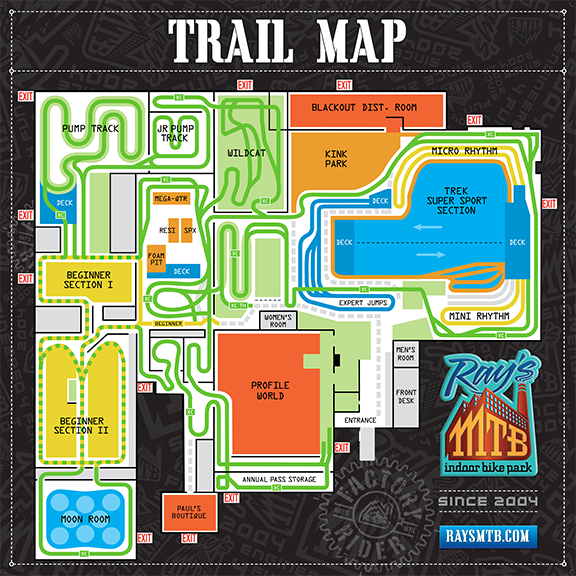

Click the map to set the dot's position at the current video time. Drag a numbered point to move it, or click it to jump to that time. Keys: ,/. frame · ←/→ 1s · Shift 5s · K play/pause · Del delete the point at this time.
| # | Time | x | y |
|---|
encodings.json file, then Apply.